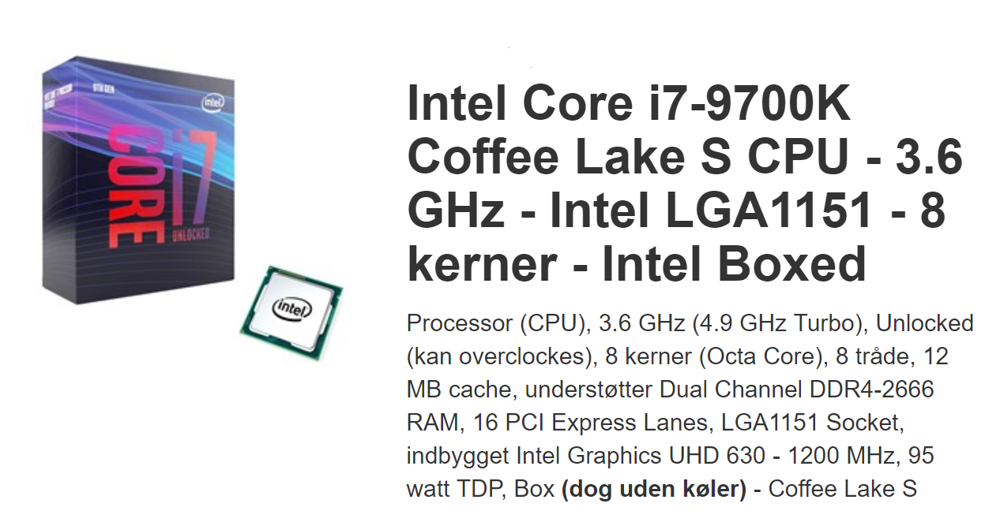
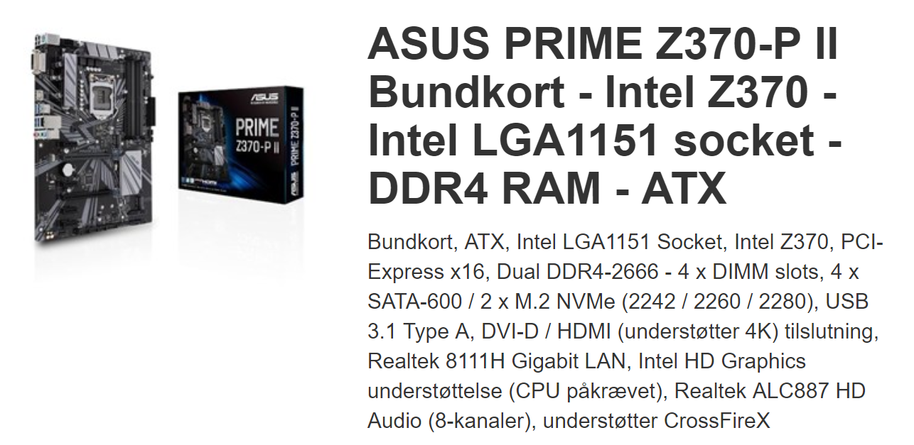
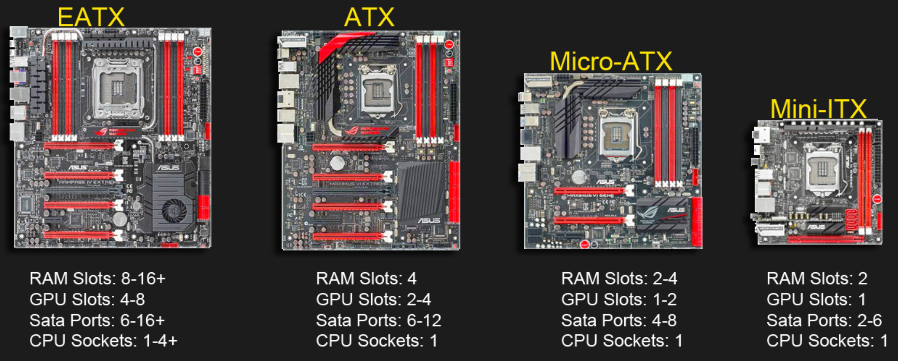
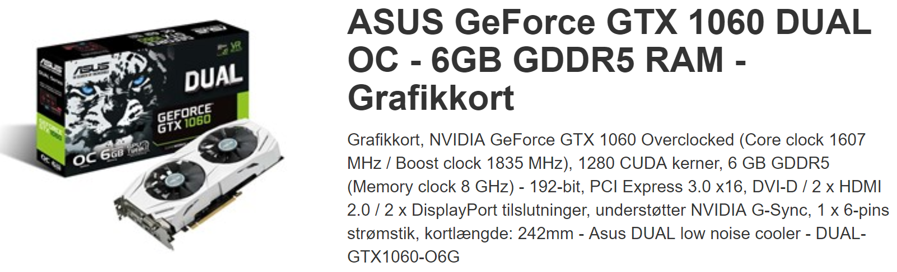
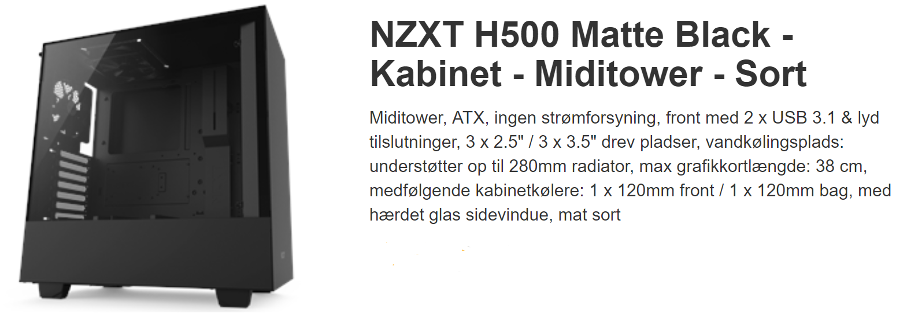
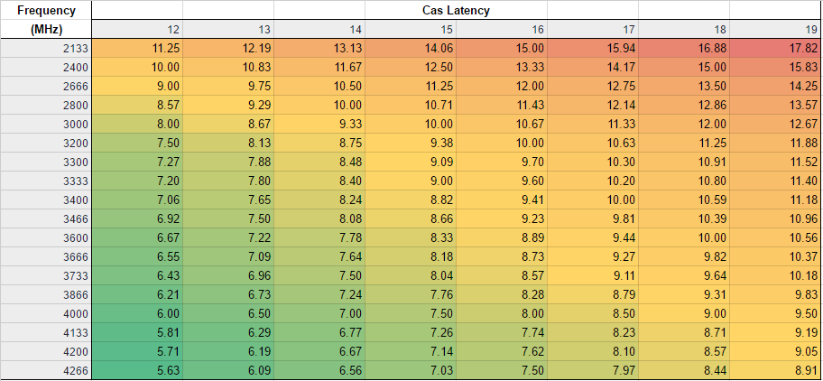
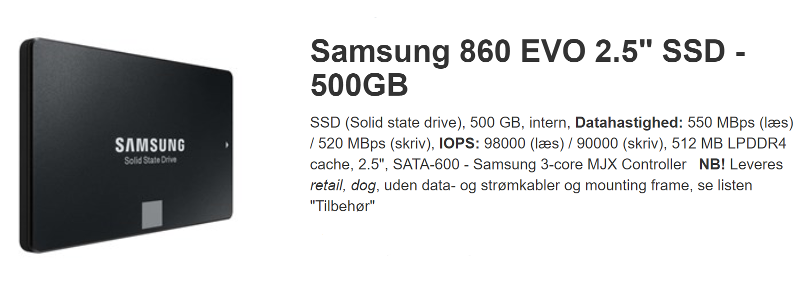
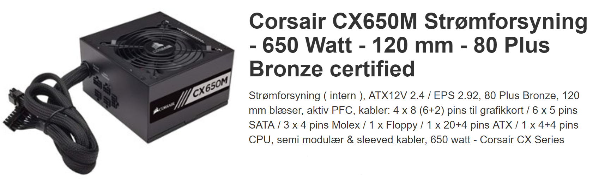
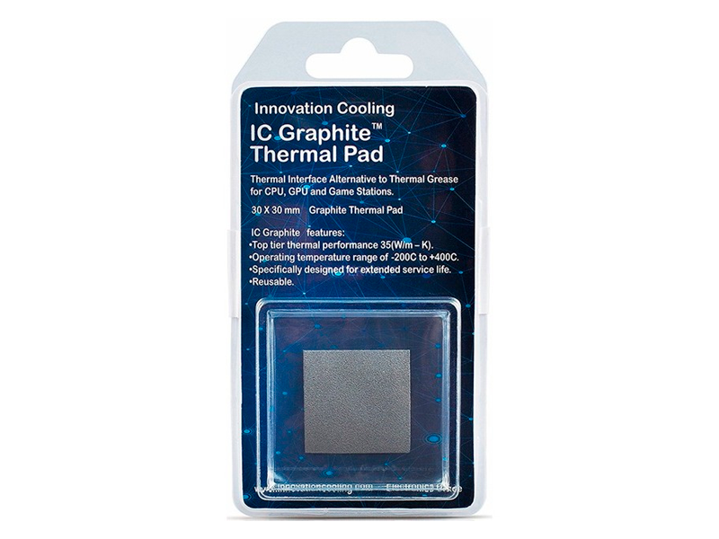

I dette level vil du få en dybere beskrivelse af hvad de forskellige computer-deles egenskaber er.
Der er vist billeder fra hjemmesider med de forskellige dele, hvor man kan se de ting der beskrives i artiklen.
Da CPU’en er den centrale del i en computer, er det den du skal bedømme din computer bygning ud fra i forhold til anvendelse og pris. Når du kigger på nettet efter en CPU, har de forskellige egenskaber dette er hvad de betyder:
Dette kaldes for clock rate, den hastighed, hvorpå en processor udfører instruktioner i en computer. Jo hurtigere clock hastighed er, jo flere instrukser kan CPU'en udføre i sekundet. Så jo højere gigahertz jo hurtigere kan din computer tænke. Turbo er en teknologi der gør at CPU’ens clock hastighed automatisk kan stige under hårde opgaver/programmer.
Dette er CPU’ens processorer, hver enkelt kan håndtere sin egne opgaver, det vil sige at jo flere kerner jo mere kan din CPU håndtere på en gang. Det normale er 4-8 kerner, men man kan gå helt op til 32.
Tråde betyder at din CPU’s kerner kan hver især snyde operativsystemet til at tro den har flere kerner end den egentlig har, og derved kan den håndtere endnu flere opgaver på engang.
Dette er fatningen mellem CPU og motherboard, her det vigtigt at din CPU passer til den rigtige socket i dit motherboard.
Hvis du er ude efter en god gamer computer, skal du nok vægte CPU’ens hastighed højere end kerner og tråde. (3-4 GHz og 4-8 kerner) Hvis du har brug for en kraftig arbejdscomputer til håndtering af tunge programmer for eksempel; video redigering eller kodeomsætning, er det bedre at have flere kerner og tråde. AMD og Intel er de to største fabrikanter og de har hver deres fordele, men du kan ikke gå galt med nogen af dem.
Det to første valg når du skal vælge bundkort er socket og formfaktoren/størrelsen på bundkortet.
Det eneste vigtige er bare at din bundkorts fatning skal passe til din CPU-fatning. Eksempler på to socket navne: Intel LGA1151 Socket - AMD AM4 Socket
Formfaktoren er blot størrelsen på selve motherboardet, så du kan finde det rigtige motherboard der passer ind i dit kabinet. Fordi bundkortet ikke er det dyreste komponent, men dog et af de vigtigste – Skal man ikke bare købe det billigste. De er tit godt beskrevet inde på købshjemmesider. Dette er de forskellige bundkort størrelser:
Extended ATX (EATX) (305 × 330 mm)
Standard ATX (305 × 244 mm)
Mini ATX (284 × 208 mm)
MicroATX (244 × 244 mm)
Videocardbenchmark, er en rangliste over næsten alle grafikkorts ydeevne, og kan bruges til at få et perspektiv omkring hvor dit grafikkort ligger henne. Når du skal vælge grafikkort, er der rigtig mange ting der kan spille ind og jeg vil ikke gå ud og foreslå et specifikt du skal købe, det er meget relativt. Men jeg har valgt at udpege nogen af de vigtigste ting at kigge efter:
Dette er videohukommelsen som sidder inde i grafikkortet, som hjælper med grafikkortes ydeevne og hvor mange opgaver dit graffkort kan løse på samme tid. Hvis du skal game er 4 GB VRAM nok til 1080p skærm, men hvis du vil op på en 4K skærm, skal du helt op på 8GB VRAM
Du skal sikre dig at det output-stik din skærm har, passer i grafikkortet. Hvis du har en skærm der kører med mere end 60 Hz, skal du huske at ikke alle stik kan håndtere dette. Hvis du kører over 60Hz er DisplayPort din tilslutnings vej. Normale skærme kører 60Hz og dertil er HDMI helt fint.
Kabinettet er det er fastlægger hvordan din computer kommer til lyde og se ud i sidste ende. Først skal du sikre dig at dit bundkort passer til dit kabinet (Det normale er ATX) Udover er der kølingsmuligheder, men du har stort set frit valg på alle hylder, da alle kabinetter i dag kommer med indbyggede blæsere. Så det valg du tager, er mest for funktionalitet, udseende og størrelsen.
RAM kommer i blokke for eksempel 2x8GB RAM betyder du har i alt 16GB, men du kan også købe en enkelt blok på 16GB eller 4x4GB og få samme antal gigabyte. Dette er dog ikke en god løsning og to RAM-blokke er oftest det bedste valg. Hvis dit motherboard siger ”dual channel” betyder 2 RAM-blokke er det bedste, hvorved ”quad channel” er 4 blokke bedst.
Når vi snakker RAM-type er DDR4 eller nyere vejen frem. DDR3 er blevet forældet er udgået fra mange af de nyere CPU’s og bundkort.
RAM-hastigheden måles i MHz, og det kan fra 2133-4266. men at finde den er rette er lidt tricky. Først skal du tjekke din CPU’s minimum RAM hastighed og som det mindste købe det, men hvis du gerne vil have en hurtigere og kraftigere computer skal du højere op i frekvens dog skal timingen også tages i betragtning.
Timing betyder den forsinkelse dine RAM kører med. Cas Latency er det man skal kigge efter i timing. Dette er ikke altid nemt at se, men når du kigger efter RAM på nettet, er der altid et C med et tal efter der står hvor mange MHz den kører med. Det bedste er at kigge på skemaet vist her og finde RAM med værdier der ligger i det gule eller grønne område.
Jeg vil ikke gå så meget ind i hvor mange gigabyte eller terabyte lagerplads du skal have, der efter dit eget behøv, men der er stadig andre ting du bør vide:
HDD’en er den klassiske lagrings harddisk, og den skal ikke bruges til andet end det. Hvis du begynder at ligge tunge og kraftige programmer på dette drev, vil du opleve at de kører meget langsomt selvom du har en kraftig computer, fordi magnetskiven ikke kan dreje hurtigere end den fysisk kan.
SSD’en derimod er meget hurtigere læse og skrivnings hastigheder end HDD’en, det vil sige den er suveræn til have din tunge programmer du hver dag til at ligge på. Hastigheden måles i megabyte per sekund (MBps) og jo højere jo bedre.
En ny slags harddisk er begyndt at komme frem i den seneste tid, det M.2 NVME harddisken, den er ufattelig hurtig i forhold til SSD nogle gange 4-5 gange så hurtig. Det er pga. den sidder direkte i dit bundkort og ikke skal tilsluttes med SATA-kabel ligesom din SSD og HDD skal, da kablet i sig selv har restriktioner for hastigheden. Hvis du installerer Windows på sådan et drev, vil du opleve at computer kan starte og være klar indenfor få sekunder.
Strømforsyningen er ikke så spændende men den er essentiel for at hele dit system kan fungere. Det findes to slags strømforsyninger: Traditionelt kabellayout og modulær. Her til vil jeg sige, køb en modulær strømforsyning hvis pengene strækker til det, det er klart den mest simple og enkle løsning, da du ikke har kabler flydende over alt i dit kabinet. En anden ting at tage fat på er effekten af din strømforsyning, altså hvor mange Watt den trækker fra stikkontakten. Hertil vil jeg foreslå at gå ind på hjemmesiden nedenfor, som har en automatisk beregner for hvor meget dit system har brug for af strøm så den ikke går i sort tilfældigt.
PSU Beregner - outervision.com/power-supply-calculator Når du skal finde køling til din CPU, kan du gå to veje: Luft eller vand. Luft køling at den nemmeste måde at montere og vedligeholde, mens vandkøling køler mere end luft. Som nybegynder vil jeg klar anbefale at købe en luft CPU-køler. Når du skruer din CPU-køler fast på dit motherboard, får det kontakt med din CPU, men der skal først ligges kølepasta imellem. Jeg vil dog foreslå at købe et Graphite Thermal Pad, som er meget nemmere at have med at gøre og så kan den genanvendes flere gang.
{kind=link}